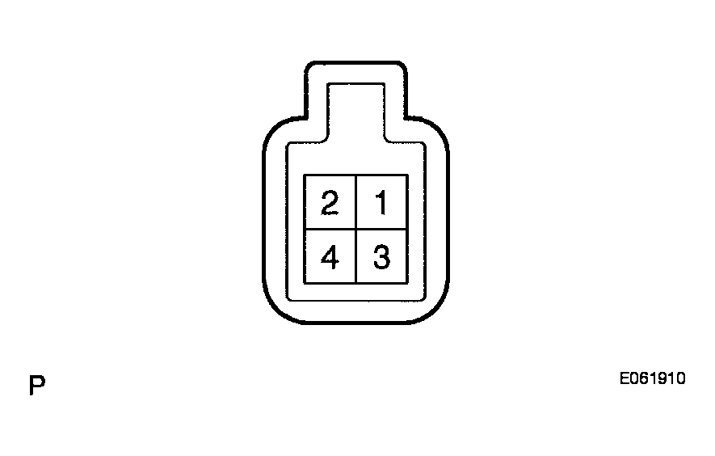

Back Door Courtesy Switch: Inspection
- INSPECT BACK DOOR LOCK ASSEMBLY (BACK DOOR COURTESY SWITCH)
- Measure the resistance of the switch.
Standard resistance
TERMINALS RESISTANCE SPECIFICATIONTester connection Switch Operation Specified Condition 1 - 2 Back door is closed 10 kΩ or higher 1 - 2 Back door is opened Below 1 Ω 
Courtesy of © TOYOTA, LICENSE AGREEMENT TMS1002If the result is not as specified, replace the switch assembly.
- Measure the resistance of the switch.